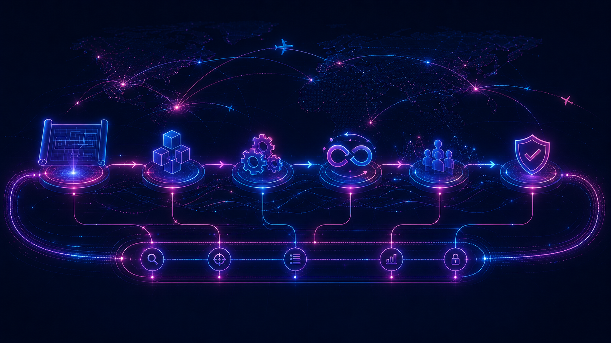

Valor real: mejores decisiones comerciales, operacionales y de cliente
El foco no está en desplegar modelos aislados, sino en mejorar decisiones como capacidad, pricing, recuperación operativa, atención en IRROPS o productividad de backoffice.
Aerolíneas · Data & AI
La oportunidad no está solo en usar IA, sino en convertir datos comerciales, operacionales y de cliente en mejores decisiones.
POV Artefact
El foco no está en desplegar modelos aislados, sino en mejorar decisiones como capacidad, pricing, recuperación operativa, atención en IRROPS o productividad de backoffice.
La oportunidad aparece cuando revenue, operación, canales y cliente dejan de vivir en silos y pasan a leerse como una sola capa de señal para decidir mejor.
La postura de Artefact combina aceleradores, integración y operación escalable para mover casos desde la idea hasta una capacidad industrial dentro de la nube y la gobernanza del cliente.
Casos de uso
Descubre metodologías y soluciones para identificar dónde se crea, protege o recupera valor en tu compañía antes de hablar de herramientas aisladas de IA
Credenciales Artefact
Inspírate con nuestros casos de éxito y descubre qué es posible
Los equipos de Network Planning y Revenue carecían de una fuente única para evaluar rentabilidad, RASK y load factor a nivel de ruta.
Dashboards interactivos con datos flown y forward-looking (Flyr + Sutherland), con filtros y drill-downs por ruta, región y período, más reglas automatizadas de validación.
Plataforma central para decisiones de red · Visibilidad de yield, RASK y tendencias de demanda · Detección de rutas underperforming para acciones dirigidas.
Sin herramienta para cuantificar la resiliencia de los itinerarios ni modelar la propagación de retrasos a través de rotaciones consecutivas.
Algoritmo de Robustness Index que calcula el delay efectivo de cada vuelo (original + propagado), agregado por rotación y a nivel de red, exportado como tabla de análisis.
Identificación de rotaciones de baja robustez · Optimización de buffer times · Reducción de efectos cascada en la red de vuelos.
Proceso de forecast de ingresos completamente manual, sin la granularidad ni flexibilidad necesarias para decisiones diarias de Revenue Management.
Ecosistema de modelos ML en AWS (Amazon Redshift + Glue) que pronostican Fare, Seat Factor y Ancillaries de forma independiente, con ejecuciones diarias automáticas y dashboard Power BI de 6 páginas.
Pronósticos fiables para los próximos 3 meses · Reducción significativa en tiempos de ejecución · Solución escalable a nuevos mercados y rutas.
Los equipos comerciales no tenían visión consolidada del performance de ventas indirectas por agencia, país o mercado para guiar decisiones de distribución.
ETL pipelines consolidando datos flown y forward-looking + dashboard Power BI con filtros dinámicos por agencia, país y mercado, incluyendo tendencias de tarifas y contribución por canal.
Identificación de mercados y agencias underperforming · Estrategias comerciales más precisas · Visibilidad única y consistente de ventas indirectas.
Centralizar los costos de distribución (comisiones, reservaciones, sistemas, gastos de venta) dispersos en 15+ orígenes para optimizar el Cost Effectiveness Revenue (CER) por canal, tipo de costo y agencia.
Pipeline integral de ingesta en AWS desde 4 fuentes principales y 15+ orígenes de datos, con un Modelo de Costos centralizado con reglas de negocio propias y reporte CER automatizado en Tableau con múltiples niveles de granularidad.
USD 1.9M de ahorro detectados al redirigir volumen desde OTAs hacia AM.COM · Modelo centralizado para estrategias de reducción de costos y negociaciones con agencias · Visibilidad completa del CER por canal.
Sin monitoreo centralizado de demoras por ruta, aeropuerto o tipo de aeronave, ni herramienta de Root Cause Analysis para el equipo de operaciones.
Dashboard en dos capas: live monitoring de OTP y pantallas analíticas de Root Cause Analysis y Disruption Scale, consolidando datos de Flight Ops, Scheduling y Ground Handling.
Detección proactiva de patrones de demora recurrentes · Intervenciones dirigidas para reducir retrasos · Base para decisiones de recuperación operacional.
Imposibilidad de planificar recursos de check-in y lounge con anticipación por falta de forecast preciso de volúmenes de pasajeros en aeropuerto.
Pipeline de ingesta de ~50 GB de datos Sabre (transacciones de check-in y solicitudes de lounge) + modelos Prophet y XGBoost para predicción en ventanas rodantes de 2 horas.
Mejora en planificación de personal de aeropuerto · Decisiones más precisas de supply de alimentos en lounge · Reducción de sobre y sub-aprovisionamiento.
Sin visibilidad integral de satisfacción del pasajero a través de las distintas etapas del viaje, desde la reserva hasta el post-trip.
Dashboard end-to-end monitoreando satisfacción en 6 etapas clave del journey, con satisfaction matrix cross-cutting y drill-downs por touchpoint y segmento de pasajero.
Monitoreo unificado desde booking hasta engagement de loyalty · Insights accionables para el equipo de CX · Base para mejoras dirigidas por touchpoint.
El equipo de cargo no podía asignar capacidad disponible con precisión por desconocimiento del volumen y peso de equipaje a nivel de vuelo.
Pipeline ML end-to-end: padding de bookings futuros con XGBoost + modelos separados (XGBoost, Ridge, Random Forest) para bag count y peso · ~5.6% de error validado en ventana rodante semanal.
Forecast preciso de carga de equipaje a nivel de vuelo · Prevención de underselling de capacidad de cargo · Mejor planificación para la semana siguiente.
Sin sistema centralizado ni visibilidad analítica sobre desempeño, capacitación, certificaciones y absentismo de la tripulación de vuelo.
Dashboard Power BI con 20+ KPIs de crew (staffing, training, performance) + diseño completo en Figma del Crew Management System con 100+ features, cubriendo scheduling, productivity, visas e incidentes.
Visibilidad integral sobre absentismo, satisfacción y training gaps · Sistema listo para implementación acelerada por el equipo tech de la aerolínea.
Necesidad de una visión unificada de IA con casos de uso priorizados y un plan claro de habilitación de datos de primera parte y tecnología.
Roadmap de IA a 3 años con 50+ oportunidades identificadas en toda la organización, estrategia de datos 1P (guest data, web data), definición de 2nd/3rd party partnerships, plan de upskilling y 20+ casos detallados.
Roadmap activado con casos como Audience Targeting Engine, personalización web, CVM para loyalty y SLF forecast para planificación de rutas y capacidad.
Sin analytics centralizado para evaluar efectividad de programas de entrenamiento de tripulación ni identificar brechas de desempeño por rango, flota o base.
Dashboard Power BI integrando Prodefis y Netline Crew con 10+ KPIs de programas Initial, Recurrent, Line Check y Proficiency Check, con filtros multidimensionales (flota, rango, homebase, nacionalidad).
Mejora continua de programas de entrenamiento · Identificación de brechas de desempeño por segmento · Benchmarking con performance histórico.
Sin visión centralizada del proceso de reclutamiento ni KPIs de hiring en tiempo real; reportes manuales que impedían decisiones ágiles en Talent Acquisition.
Integración directa con iCIMS (ATS) + dashboard interactivo con tracking automatizado end-to-end de métricas de contratación: hiring funnel, SLA por etapa y tendencias de talento.
Decisiones de RRHH más rápidas y data-driven · Visión unificada del estado de reclutamiento · Base para reportes automáticos de la función de RRHH.
Sin herramienta para monitorear la percepción pública de competidores ni benchmarks sistematizados de calidad de experiencia en las etapas clave del journey del pasajero.
Web scraping con UiPath sobre sitios y blogs + análisis de sentimiento con GenAI (IA generativa) across 6 etapas del journey · Dashboard con Overview de sentimiento y Rating Analysis por touchpoint.
Benchmarking granular de competidores por etapa del journey · Identificación de áreas donde competidores destacan o fallan · Base para mejoras estratégicas de servicio.
Datos de marketing fragmentados entre múltiples plataformas (GA, Adobe, Meta, Sprinklr, Snapchat) sin visión consolidada de performance de canales pagos, orgánicos y web/app.
Implementación de GA360 Suite + BigQuery para FlyDubai + dashboard consolidado para Riyadh Air integrando Paid Media, Social Media, Web/App Engagement y conversión, con 60+ KPIs mapeados.
Page load time mejorado 16% (FlyDubai) · Visión cross-channel unificada · Optimización de targeting y asignación de presupuesto basada en ROAS y atribución.
Se necesitaba un ecosistema de datos unificado en AWS para consolidar fuentes clave de demanda a nivel industria (MIDT, DDS, PRISM) y habilitar análisis de market share, market size y analítica self-service para Revenue Management, Network Planning y Sales.
Pipeline ETL con AWS Redshift + Apache Iceberg (arquitectura Hot & Cold), ETLs incrementales automáticos, arquitectura medallón con reglas de calidad DAMA, 6 vistas materializadas y data marts para múltiples unidades de negocio.
Eliminación de procesos manuales de ingesta · Acceso inmediato a datos recientes (2-3 años) · 8 nuevos casos de uso y 7 reportes de Tableau habilitados · Gobernanza robusta y analítica self-service para Revenue Management, Sales y Network Planning.
Por qué Artefact
Artefact compite como pure player global de Data & AI: combina profundidad técnica, entrega end-to-end, certificaciones cloud, aceleradores y equipos multidisciplinarios para industrializar casos de uso en el entorno del cliente.
Especialización profunda frente a consultoras generalistas, desde visión estratégica hasta modelos y productos de datos operativos.

02Blueprint, arquitectura, ingeniería, MLOps, adopción y gobierno conectados desde el inicio para evitar pilotos aislados.
Diseño en la nube del cliente, con DataOps, IaC, seguridad por diseño y contratos de datos para escalar con control.
Credenciales en airlines, airports, travel, tourism y transportation, con nearshoring y presencia global para delivery regional.
Presencia Artefact